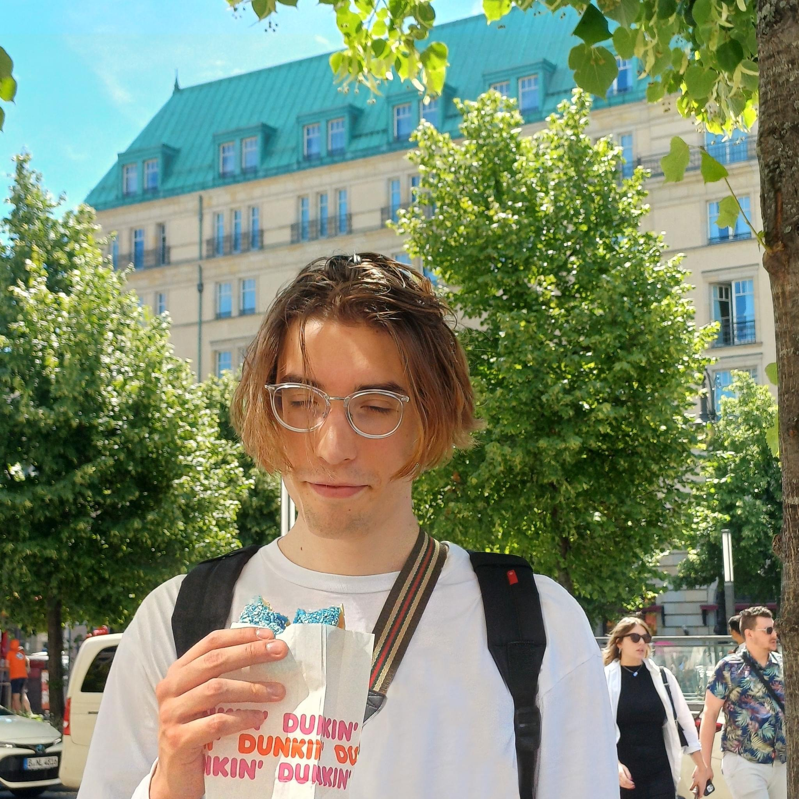

Hi! My name is Przemek Kusiak, and I use an alias which is as incomprehensible as my name: allvpv. I live and work in 📍 Warsaw, Poland.
I write about ✨ computers ✨. Usually, I start my posts with a random rambling or personal story, and then a technical part follows. If you found my blog similar to Julia Evans, that’s not by accident: I love her blog and I am hevily inspired by it.
Peace! Leave me an email, if you want to! Sometimes, I post something on BlueSky. And that’s me:
